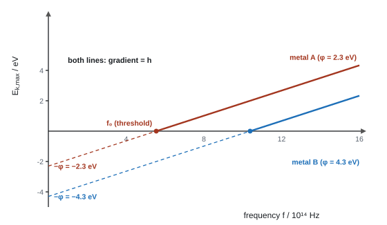
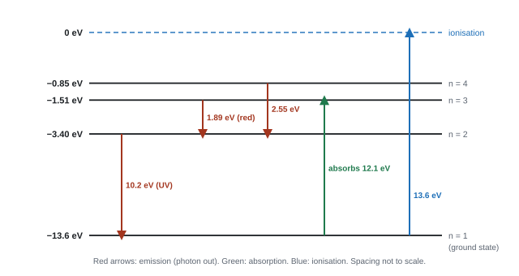

Particle Nature of Light
Is light a wave or a stream of particles? Physicists argued about it for two hundred years, and the answer turned out to be "both, depending on the experiment". On this page you'll see why the photoelectric effect forced us to think of light as photons, how atoms emit and absorb light at exact energies, and how electrons, which we think of as particles, can diffract like waves.
Spec53Electron diffraction: evidence that electrons behave as waves
Understand how electron diffraction experiments give evidence that electrons have a wave nature.
The experiment
- In an evacuated electron diffraction tube, electrons from a heated cathode are accelerated through a p.d. of a few kV.
- The beam passes through a very thin film of polycrystalline graphite.
- On the fluorescent screen you see concentric rings, not a single spot.
Why it is evidence of wave behaviour
- Rings like these are a diffraction / interference pattern: the same thing light does through a grating. Particles alone would give one spot (or a blur).
- The regular layers of carbon atoms act like a grating. Diffraction is strong because the electrons' de Broglie wavelength (54) is similar to the spacing between the atoms (about 10⁻¹⁰ m).
- Raise the accelerating p.d. → electrons go faster → greater momentum → shorter wavelength (λ = h/p) → less diffraction → rings get smaller.
- The same electrons hit the screen at single points, like particles. They show both behaviours.
why an ordinary grating won't do
Electrons accelerated through 2500 V have λ = 2.46 × 10⁻¹¹ m (see 54). A light grating with 500 lines per mm has d = 2.00 × 10⁻⁶ m.
sin θ = λ/d = 2.46 × 10⁻¹¹ ÷ 2.00 × 10⁻⁶ = 1.2 × 10⁻⁵ → θ ≈ 7 × 10⁻⁴°.
Far too small to see. The gap must be comparable to λ, which is why atomic spacings are used.
In an electron diffraction tube, electrons are accelerated through 3.5 kV. (a) Show that their de Broglie wavelength is about \(2\times10^{-11}\ \text{m}\). (b) The p.d. is increased to 5.0 kV. Explain what happens to the rings on the screen. (c) Calculate the speed a neutron (mass \(1.67\times10^{-27}\ \text{kg}\)) would need to have the same wavelength as in (a).
Show solution
(a) \(\lambda = h/\sqrt{2meV}\):
\[ \lambda = \frac{6.63\times10^{-34}}{\sqrt{2 \times 9.11\times10^{-31} \times 1.60\times10^{-19} \times 3500}} = \frac{6.63\times10^{-34}}{3.19\times10^{-23}} = 2.08\times10^{-11}\ \text{m} \approx 2\times10^{-11}\ \text{m} \](b) The electrons gain more kinetic energy and momentum, so \(\lambda = h/p\) decreases (to \(2.08\times10^{-11}\times\sqrt{3.5/5.0} = 1.74\times10^{-11}\ \text{m}\)). Shorter waves diffract through smaller angles, so the rings get smaller (and closer to the central spot).
(c) Same wavelength means the same momentum, so \(v = h/(m\lambda)\):
\[ v = \frac{6.63\times10^{-34}}{1.67\times10^{-27} \times 2.08\times10^{-11}} = 1.9\times10^{4}\ \text{m s}^{-1} \]The neutron is about 1800 times heavier than the electron, so it needs to go about 1800 times slower to have the same momentum.
- "Electrons diffract as they pass through the graphite", so "electrons can behave as / show the properties of waves".
- "The (de Broglie) wavelength of the electrons is similar to the spacing between the atoms"; graphite has a "regular/ordered structure" acting as a grating.
- Higher p.d.: "greater momentum, so λ = h/p is smaller, so the rings get smaller".
Often asked as: interpret ring patterns (2–4 marks), effect of changing the accelerating p.d., MCQs on what counts as evidence of wave behaviour, why a neutron or an ordinary grating wouldn't work.
Writing "electrons are waves". They behave as waves here (WPH12 Oct 2024 examiner report).
Saying "wave behaviour" without naming diffraction or interference.
Thinking attraction between charges, or electrons hitting the screen as dots, is evidence of wave nature (it isn't).
Examined in past papers even though the spec doesn't list it.
Is a particle suitable for diffraction by atoms? Compare its wavelength with the atomic spacing. A neutron with λ = 2.8 × 10⁻¹⁴ m is far smaller than an atom (about 10⁻¹⁰ m), so it would not diffract noticeably. The final mark is the numerical comparison (WPH12 Oct 2020).
Spec54The de Broglie equation
Use λ = h/p for the wavelength of a moving particle.
The equation
de Broglie wavelength
λ = de Broglie wavelength (m), h = Planck constant = 6.63 × 10⁻³⁴ J s, p = momentum (kg m s⁻¹) = mass (kg) × velocity (m s⁻¹). On the formulae sheet.
- Every moving particle has a wavelength. Bigger momentum → shorter wavelength.
- Everyday objects have huge momentum compared with h, so their wavelengths are absurdly small and no wave behaviour is ever seen.
- For an electron accelerated from rest through p.d. V: kinetic energy gained = eV = ½mv², so find v, then p = mv, then λ.
electron and ball
(a) An electron (m = 9.11 × 10⁻³¹ kg) is accelerated from rest through 2500 V.
E_k = eV = 1.60 × 10⁻¹⁹ × 2500 = 4.00 × 10⁻¹⁶ J.
v = √(2E_k/m) = √(2 × 4.00 × 10⁻¹⁶ ÷ 9.11 × 10⁻³¹) = 2.96 × 10⁷ m s⁻¹.
p = mv = 9.11 × 10⁻³¹ × 2.96 × 10⁷ = 2.70 × 10⁻²³ kg m s⁻¹.
λ = h/p = 6.63 × 10⁻³⁴ ÷ 2.70 × 10⁻²³ = 2.46 × 10⁻¹¹ m (3 s.f.). Similar in size to atomic spacings, so it diffracts.
(b) A 0.058 kg tennis ball at 50 m s⁻¹: λ = 6.63 × 10⁻³⁴ ÷ (0.058 × 50) = 2.3 × 10⁻³⁴ m. Far too small to show any diffraction.
The electron starts at rest. Moving through a p.d. \(V\), it gains energy \(W = QV = eV\), all as kinetic energy:
\[ \tfrac12 m v^2 = eV \]Write the kinetic energy in terms of momentum. Since \(p = mv\), \(v = p/m\):
\[ \tfrac12 m \left(\frac{p}{m}\right)^2 = \frac{p^2}{2m} = eV \]Solve for the momentum:
\[ p = \sqrt{2meV} \]Put this into the de Broglie equation:
\[ \boxed{\lambda = \frac{h}{p} = \frac{h}{\sqrt{2meV}}} \]So \(\lambda \propto 1/\sqrt{V}\): four times the voltage halves the wavelength, and roughly halves the ring sizes.
Electrons are accelerated from rest through a p.d. of 4.0 kV. Calculate their de Broglie wavelength, and explain why a tennis ball of mass 0.058 kg moving at 30 m s⁻¹ shows no diffraction effects.
Show solution
Momentum of the electron from \(p = \sqrt{2meV}\):
\[ p = \sqrt{2 \times 9.11\times10^{-31} \times 1.60\times10^{-19} \times 4000} = 3.42\times10^{-23}\ \text{kg m s}^{-1} \] \[ \lambda = \frac{h}{p} = \frac{6.63\times10^{-34}}{3.42\times10^{-23}} = 1.94\times10^{-11}\ \text{m} \]This is comparable to the spacing of atoms in a crystal, so the electrons diffract noticeably. For the tennis ball:
\[ \lambda = \frac{h}{mv} = \frac{6.63\times10^{-34}}{0.058 \times 30} = 3.8\times10^{-34}\ \text{m} \]That is far smaller even than a proton (about \(10^{-15}\ \text{m}\) across). There is no gap anywhere near that small, so the ball's diffraction is far too small ever to detect.
- "Use of p = mv", "use of λ = h/p"; with a p.d., "use of eV = ½mv²".
- Reverse questions: find m from λ and v, then say what the particle is (9.1 × 10⁻³¹ kg → electron; "similar" accepted, WPH12 Jan 2023).
- Some parts require "at least 3 s.f." in a show-that (WPH12 Jan 2026).
Often asked as: direct λ calculations, electrons through a p.d., rearrangement MCQs (v = h/mλ), a car or person's wavelength, find the particle from its mass.
Dividing h by the velocity instead of the momentum (scored 0, WPH12 Jan 2025 examiner report).
Putting the electron charge in where the mass belongs.
Leaving off the conclusion when the question ends with a claim to check.
Examined in past papers even though the spec doesn't list it.
- Momentum straight from kinetic energy: E_k = p²/2m, so p = √(2mE_k) (accepted, WPH12 Jan 2026).
- Photons have momentum too: p = h/λ (WPH12 Jan 2021, MCQ).
Spec57The wave model and the photon model of light
Understand how electromagnetic radiation can be described by a wave model and by a photon model, and how these models developed over time.
Two models, each needed
| Behaviour of light | Explained by |
|---|---|
| Reflection, refraction | both models (the wave model correctly predicts light slows in glass) |
| Diffraction, interference, polarisation | wave model only |
| Photoelectric effect (59–62), line spectra (63) | photon model only |
- Wave model: light is a transverse electromagnetic wave. Its energy is spread continuously over the wavefront, and the energy delivered depends on intensity (amplitude squared) and time.
- Photon model: light travels as photons, discrete packets (quanta) of energy E = hf. Each photon interacts with one electron and gives up all its energy at once.
- Light needs both models: this is wave–particle duality. Electrons show it too (53).
How the ideas developed
| When | Who | Step |
|---|---|---|
| late 1600s | Newton | light as a stream of particles (corpuscles); he wrongly predicted light speeds up in glass |
| late 1600s | Huygens | light as a wave, using secondary wavelets |
| 1801 | Young | two-slit interference: strong evidence for waves; wave model accepted |
| 1850 | Foucault | light measured to be slower in water: agrees with waves, not Newton |
| 1860s–1880s | Maxwell, then Hertz | light is an electromagnetic wave; Hertz makes radio waves and notices that UV helps sparks jump (the photoelectric effect) |
| 1900 | Planck | energy is emitted in quanta, E = hf |
| 1905 | Einstein | light itself comes in photons: explains the photoelectric effect |
| 1916 | Millikan | experiments confirm Einstein's photoelectric equation |
| 1924–1927 | de Broglie; Davisson and Germer, G. P. Thomson | particles have wavelengths; electron diffraction confirms it |
A model is kept while it explains the evidence. When a new observation (like the photoelectric effect) can't be explained, the model is extended or a new one is added.
The marks are for what each model predicts, not dates:
- Wave model: energy builds up over time, so emission would be delayed in dim light; any frequency would work given enough intensity or time; electron energy would depend on intensity.
- Photon model: a minimum (threshold) frequency is needed; emission is instantaneous; kinetic energy depends on frequency; intensity changes the number of photons, not their energy.
Often asked as: MCQ on which model explains which effect; 6-mark comparisons of the two models using the photoelectric effect (see 62).
Examined in past papers even though the spec doesn't list it.
"In the wave model, more intense light means a bigger amplitude, so any intensity would eventually release electrons. In the photon model, intensity changes the number of photons, not their energy, so only UV photons with enough energy release electrons" (5 marks, WPH12 Jan 2025).
Spec58Photon energy, E = hf
Use E = hf to link the energy of a photon to the frequency of the radiation.
The equation
A photon is a discrete packet (quantum) of electromagnetic energy. It has no mass and no charge.
Photon energy
Using \(c = f\lambda\)
E = photon energy (J), h = 6.63 × 10⁻³⁴ J s, f = frequency (Hz), c = 3.00 × 10⁸ m s⁻¹, λ = wavelength (m). E = hf is on the formulae sheet.
- Higher frequency (shorter wavelength) → more energy per photon. Gamma and X-ray photons carry the most; radio photons the least.
- Photons per second from a source of power P: N = P / E = P / hf. For a beam, P = intensity × area (44).
- For the same power, shorter-wavelength light means fewer photons per second, because each carries more energy.
photon energy and photon rate
(a) Blue light, λ = 450 nm: E = hc/λ = (6.63 × 10⁻³⁴ × 3.00 × 10⁸) ÷ (450 × 10⁻⁹) = 4.42 × 10⁻¹⁹ J (3 s.f.) = 2.76 eV.
(b) A 5.0 mW laser emits 633 nm light. E per photon = 1.99 × 10⁻²⁵ ÷ 633 × 10⁻⁹ = 3.14 × 10⁻¹⁹ J.
Photons per second = P/E = 5.0 × 10⁻³ ÷ 3.14 × 10⁻¹⁹ = 1.6 × 10¹⁶ s⁻¹ (2 s.f.).
A laser pointer emits red light of wavelength 633 nm with a power of 1.0 mW. Calculate (a) the energy of one photon and (b) the number of photons emitted per second.
Show solution
(a) Use \(E = hc/\lambda\), with the wavelength in metres:
\[ E = \frac{6.63\times10^{-34} \times 3.00\times10^{8}}{633\times10^{-9}} = 3.14\times10^{-19}\ \text{J} \](b) Power is energy per second, so divide it by the energy of one photon:
\[ N = \frac{P}{E} = \frac{1.0\times10^{-3}}{3.14\times10^{-19}} = 3.2\times10^{15}\ \text{photons per second} \]- "Use of v = fλ" (or c = fλ) and "use of E = hf". A single combined substitution into E = hc/λ earns both marks.
- Photon counting: "E = Pt", then "number = total energy ÷ energy of one photon".
Often asked as: on nearly every paper: E from λ (and back), photons emitted per second or per minute, percentage of photons that release an electron.
Forgetting nm → m (× 10⁻⁹).
In a "show that", giving only the rounded value from the question. Show more figures than it gives (e.g. 4.43 eV for "4.4 eV").
Examined in past papers even though the spec doesn't list it.
Photocell efficiency: electrons per second = current ÷ e (I/e), compared with photons per second arriving, e.g. 82 % of photons release an electron (WPH12 Jan 2026).
Spec59Absorbing a photon can release a photoelectron
Understand that when a photon is absorbed, an electron (a photoelectron) can be emitted.
The photoelectric effect
When electromagnetic radiation of high enough frequency shines on a metal surface, electrons are emitted from the surface. These are called photoelectrons.
What happens, step by step
- A photon hits the metal and is absorbed by one electron: a one-to-one interaction. The photon gives up all its energy; it can't be partly absorbed.
- Part of that energy is needed to free the electron from the metal (at least the work function, 60).
- If the photon's energy is enough, the electron escapes. Whatever energy is left over becomes its kinetic energy.
- Electrons from deeper inside lose some energy on the way out, so photoelectrons leave with a range of kinetic energies, up to a maximum.
- If the photon doesn't have enough energy, no electron escapes, however many photons arrive. An electron can't save up energy from two photons.
Intensity and frequency
- Brighter light (same frequency) = more photons per second → more electrons emitted per second → bigger photocurrent. The maximum kinetic energy is unchanged.
- Higher frequency = more energy per photon → faster photoelectrons (more kinetic energy). The number per second depends on how many photons arrive.
The gold-leaf electroscope demonstration
- A clean zinc plate on a negatively charged electroscope: the leaf stands up.
- Shine UV on it: the leaf falls at once. Photoelectrons leave, so the plate loses its negative charge.
- Shine bright visible light: nothing happens. Its photons have too little energy for zinc.
- Charge the plate positively: UV makes no difference, because any released electrons are pulled back.
- "A photon is absorbed by an electron"; "one photon interacts with one electron"; "the electron gains the photon's energy and is emitted / escapes".
- "Energy is shared between the work function and the kinetic energy of the electron".
- Intensity: "more photons per second, so more electrons per second, so a greater current". The idea of a rate is needed.
Often asked as: describe the process (2–4 marks), why photoelectrons have a range of speeds, the effect of intensity on the current, MCQs (a photon can't be partly absorbed).
Writing answers where it isn't clear whether photons or electrons are being released (WPH12 Oct 2020 examiner report). Photons go in; electrons come out.
Saying brighter light gives faster electrons.
Examined in past papers even though the spec doesn't list it.
A photocell has a metal cathode and a collecting gauze. With the gauze positive, electrons are attracted across and a current flows; reverse the polarity and the current stops once the p.d. is large enough (WPH12 Oct 2023).
Spec60Threshold frequency, work function and hf = φ + ½mv²max
Know what threshold frequency and work function mean, and use hf = φ + ½mv²max.
Definitions
- Work function φ: the minimum energy needed to remove an electron from the surface of a metal. Each metal has its own value.
- Threshold frequency f₀: the minimum frequency of radiation that will release electrons from the metal. A photon at f₀ has just enough energy: hf₀ = φ, so f₀ = φ/h. The matching threshold wavelength is λ₀ = c/f₀ (longer wavelengths won't work).
Einstein's photoelectric equation
Energy conservation for the most energetic electrons (those from the surface):
Einstein's equation
hf = photon energy (J), φ = work function (J), ½mv²max = maximum kinetic energy of a photoelectron (J), m = 9.11 × 10⁻³¹ kg. On the formulae sheet.
The graph

Stopping potential
Make the collector negative and increase the p.d. until the current just stops. Then even the fastest electrons are turned back, so the work done equals their kinetic energy:
Stopping potential
zinc in ultraviolet
Zinc has φ = 4.3 eV. UV of wavelength 200 nm shines on it.
Photon energy: E = hc/λ = 1.99 × 10⁻²⁵ ÷ 200 × 10⁻⁹ = 9.95 × 10⁻¹⁹ J.
φ in joules: 4.3 × 1.60 × 10⁻¹⁹ = 6.88 × 10⁻¹⁹ J.
E_k,max = hf − φ = 9.95 × 10⁻¹⁹ − 6.88 × 10⁻¹⁹ = 3.07 × 10⁻¹⁹ J.
v_max = √(2E_k/m) = √(2 × 3.07 × 10⁻¹⁹ ÷ 9.11 × 10⁻³¹) = 8.2 × 10⁵ m s⁻¹ (2 s.f.).
Stopping potential: V_s = E_k,max/e = 3.07 × 10⁻¹⁹ ÷ 1.60 × 10⁻¹⁹ = 1.9 V.
Threshold frequency: f₀ = φ/h = 6.88 × 10⁻¹⁹ ÷ 6.63 × 10⁻³⁴ = 1.0 × 10¹⁵ Hz (threshold wavelength 290 nm). Visible light (400–700 nm) can't release electrons from zinc.
One photon is absorbed by one electron, so the energy the electron receives is the whole photon energy:
\[ E_{\text{in}} = hf \]To leave the metal, the electron must do work against the attraction of the positive ions. The least work any electron has to do is the work function \(\phi\), for an electron right at the surface.
\[ W_{\text{escape}} \ge \phi \]Energy is conserved, so whatever is left over becomes kinetic energy:
\[ \tfrac12 mv^2 = hf - W_{\text{escape}} \le hf - \phi \]This is why the electrons come out with a spread of speeds: different electrons lose different amounts of energy on the way out.
The fastest electrons are the ones that only had to do work \(\phi\). Rearranging:
\[ \boxed{hf = \phi + \tfrac12 mv_{\text{max}}^2} \]At the threshold frequency the photon has only just enough energy, so the maximum kinetic energy is zero:
\[ hf_0 = \phi + 0 \quad\Rightarrow\quad \boxed{f_0 = \frac{\phi}{h}} \]Below \(f_0\), \(hf - \phi\) would be negative: no electron can escape, however many photons arrive.
Ultraviolet radiation of wavelength 250 nm falls on a zinc plate. The work function of zinc is 4.3 eV. Calculate (a) the maximum kinetic energy of the photoelectrons in J, (b) their maximum speed and (c) the threshold frequency for zinc.
Show solution
(a) Photon energy, and the work function in joules:
\[ hf = \frac{hc}{\lambda} = \frac{6.63\times10^{-34}\times3.00\times10^{8}}{250\times10^{-9}} = 7.96\times10^{-19}\ \text{J} \] \[ \phi = 4.3 \times 1.60\times10^{-19} = 6.88\times10^{-19}\ \text{J} \] \[ \tfrac12 mv_{\text{max}}^2 = hf - \phi = 7.96\times10^{-19} - 6.88\times10^{-19} = 1.08\times10^{-19}\ \text{J} \](b) Rearrange the kinetic energy for \(v\), using \(m_e = 9.11\times10^{-31}\ \text{kg}\):
\[ v_{\text{max}} = \sqrt{\frac{2 \times 1.08\times10^{-19}}{9.11\times10^{-31}}} = 4.9\times10^{5}\ \text{m s}^{-1} \](c) At threshold, \(hf_0 = \phi\):
\[ f_0 = \frac{\phi}{h} = \frac{6.88\times10^{-19}}{6.63\times10^{-34}} = 1.0\times10^{15}\ \text{Hz} \]That's a wavelength of \(c/f_0 \approx 290\ \text{nm}\). Visible light (above 380 nm) can never release electrons from zinc.
- Work function: "minimum energy required to release/remove an electron from the surface of a metal". "Energy needed" without "minimum" is ignored.
- "Converts φ from eV to J" is a marking point. "Use of hf = φ + ½mv²max."
- The speed mark needs real energy and mass values substituted (not the charge).
- Graph: "gradient = h", "x-intercept = threshold frequency", "y-intercept = −φ".
Often asked as: define φ, find v_max, identify a metal from φ in a table, decide whether emission happens, threshold frequency, stopping potential, read h and φ from a graph.
Forgetting "minimum" in the work function definition (WPH12 Oct 2020 examiner report).
Mixing eV and J in one subtraction.
Saying brighter light increases the electrons' speed. Only frequency does (WPH12 Jan 2021).
No unit on v_max or V_s.
Examined in past papers even though the spec doesn't list it.
- A photoelectron then accelerated through a p.d. V gains eV, so final E_k = initial E_k + eV, e.g. 8.30 × 10⁻¹⁹ J + 1.73 × 10⁻¹⁷ J = 1.81 × 10⁻¹⁷ J (WPH12 Oct 2024).
- One paper (WPH12 Jun 2022) gave a graph with deliberately wrong intercepts and asked you to show it can't be zinc. Don't learn its −10 eV intercept as data.
Spec61The electronvolt
Use the electronvolt (eV) to express small energies.
Definition
1 electronvolt is the energy transferred when one electron moves through a potential difference of 1 volt. From W = QV:
The electronvolt
- eV → J: multiply by 1.60 × 10⁻¹⁹. J → eV: divide by 1.60 × 10⁻¹⁹.
- An electron accelerated from rest through V volts gains V electronvolts of kinetic energy.
- Photon energies, work functions and atomic energy levels are a few eV, so the eV keeps the numbers simple.
conversions
(a) An electron accelerated from rest through 150 V gains 150 eV = 150 × 1.60 × 10⁻¹⁹ = 2.40 × 10⁻¹⁷ J. Its speed: v = √(2 × 2.40 × 10⁻¹⁷ ÷ 9.11 × 10⁻³¹) = 7.26 × 10⁶ m s⁻¹ (3 s.f.).
(b) A 700 nm photon: E = 1.99 × 10⁻²⁵ ÷ 700 × 10⁻⁹ = 2.84 × 10⁻¹⁹ J = 2.84 × 10⁻¹⁹ ÷ 1.60 × 10⁻¹⁹ = 1.78 eV.
- "Converts J to eV" / "eV to J" is usually its own mark.
- In a comparison either unit is fine if both values are in the same unit (e.g. 0.66 eV < 1.5 eV, WPH12 Jan 2025).
Often asked as: a one-mark conversion inside photoelectric and energy-level questions.
Treating the eV as a unit of voltage. It is a unit of energy.
Comparing a value in eV with one in J.
Spec62The photoelectric effect as evidence for the particle nature of light
Understand how the photoelectric effect gives evidence that electromagnetic radiation behaves as particles.
Observation, wave prediction, photon explanation
| Observation | What the wave model predicts | Photon explanation |
|---|---|---|
| No electrons below a threshold frequency, however bright the light | any frequency should work if the light is intense enough (or shone for long enough) | each photon has energy hf; below f₀ one photon has less than φ, and one electron can't combine energy from several photons |
| Emission is instantaneous, even in very dim light | in dim light an electron would have to absorb energy for a long time before it could escape | one photon gives all its energy to one electron at once |
| Maximum kinetic energy depends on frequency, not intensity | more intense light (bigger amplitude) should give faster electrons | E_k,max = hf − φ: only frequency changes the photon energy |
| Number of electrons per second depends on intensity | (not a clear prediction) | more intense = more photons per second = more electrons per second |
Writing the 6-mark answer
- Light arrives as photons, each with energy E = hf.
- One photon interacts with one electron.
- An electron needs a minimum energy (the work function) to escape, so there's a threshold frequency.
- So emission is instantaneous when f > f₀; in the wave model energy would have to build up.
- Extra energy becomes kinetic energy, so frequency controls E_k,max; intensity only controls the number of electrons per second.
- These can only be explained if light behaves as particles.
A student measures the maximum kinetic energy of photoelectrons from a metal for several frequencies and draws a best-fit line. Two points on the line are \((7.0\times10^{14}\ \text{Hz},\ 0.62\ \text{eV})\) and \((1.10\times10^{15}\ \text{Hz},\ 2.28\ \text{eV})\). (a) Use the graph to find a value for the Planck constant. (b) Find the work function of the metal in eV. (c) Calculate the threshold frequency.
Show solution
(a) The gradient of the KE–f graph is \(h\). Work it out in eV s, then convert to J s:
\[ \text{gradient} = \frac{2.28 - 0.62}{1.10\times10^{15} - 7.0\times10^{14}} = \frac{1.66\ \text{eV}}{4.0\times10^{14}\ \text{Hz}} = 4.15\times10^{-15}\ \text{eV s} \] \[ h = 4.15\times10^{-15} \times 1.60\times10^{-19} = 6.64\times10^{-34}\ \text{J s} \](b) Rearrange \(\tfrac12 mv_{\text{max}}^2 = hf - \phi\) and use either point:
\[ \phi = hf - \tfrac12 mv_{\text{max}}^2 = (4.15\times10^{-15} \times 7.0\times10^{14}) - 0.62 = 2.91 - 0.62 = 2.29\ \text{eV} \approx 2.3\ \text{eV} \](c) At threshold, \(f_0 = \phi / h\):
\[ f_0 = \frac{2.29\ \text{eV}}{4.15\times10^{-15}\ \text{eV s}} = 5.5\times10^{14}\ \text{Hz} \]This is where the line would cross the frequency axis. The metal is probably sodium.
Indicative content credited (WPH12 Jan 2022): photon energy related to frequency; one-to-one interaction; minimum energy/frequency needed; instantaneous release; frequency affects kinetic energy; intensity affects the number of electrons per second. Each "observation" needs its "explanation" for the linkage marks.
Often asked as: 6-mark questions (WPH12 Jun 2019, Jan 2022, Oct 2023), 5-mark wave v photon comparisons, why UV releases electrons but visible light doesn't, two sources and two metals.
Saying "brighter light gives more energetic electrons".
Describing the observations without saying why the wave model fails, when the question asks you to compare.
Examined in past papers even though the spec doesn't list it.
A wave-model estimate of the delay: a single atom (area about 8 × 10⁻²⁰ m²) in dim light would take about two minutes (118 s) to collect enough energy, yet emission is instant (WPH12 Oct 2020).
Spec63Line spectra and energy levels
Explain atomic line spectra using transitions between discrete energy levels, and calculate the frequency of the radiation emitted or absorbed in a transition.
Discrete energy levels
- Electrons in an atom can only have certain discrete (fixed) energies: the energy levels. Each element has its own set.
- The levels are negative: 0 eV is the energy of an electron that has just been removed (ionisation). The lowest level is the ground state.
- Ionisation energy = the energy needed to remove an electron from the ground state completely (13.6 eV for hydrogen).

Emission spectra
- Atoms gain energy (in a discharge tube, collisions with fast electrons; or by heating).
- An electron is excited to a higher energy level.
- It is unstable there and drops back to a lower level, emitting a photon whose energy equals the difference between the two levels.
- The levels are discrete, so only certain energy differences exist, so only certain frequencies (wavelengths) are emitted: a line spectrum of bright lines on a dark background.
Photon from a transition
E₁ = upper level, E₂ = lower level (J; convert from eV). f = frequency of the photon (Hz).
Absorption spectra
- Shine white light (all wavelengths) through a cool gas. Photons with exactly the energy of an upward transition are absorbed; all others pass straight through.
- You see a continuous spectrum crossed by dark lines at the same wavelengths as that gas's emission lines.
- A photon with the wrong energy is not absorbed at all, even if it has more than enough. (An electron colliding with the atom is different: it can hand over just part of its kinetic energy.)
hydrogen transitions
(a) n = 3 (−1.51 eV) to n = 2 (−3.40 eV): ΔE = 3.40 − 1.51 = 1.89 eV = 1.89 × 1.60 × 10⁻¹⁹ = 3.02 × 10⁻¹⁹ J.
f = ΔE/h = 3.02 × 10⁻¹⁹ ÷ 6.63 × 10⁻³⁴ = 4.56 × 10¹⁴ Hz; λ = c/f = 6.58 × 10⁻⁷ m (658 nm, red).
(b) n = 2 to n = 1: ΔE = 13.6 − 3.40 = 10.2 eV = 1.63 × 10⁻¹⁸ J, f = 2.46 × 10¹⁵ Hz, λ = 1.22 × 10⁻⁷ m (ultraviolet).
(c) Can a 12.3 eV photon be absorbed by hydrogen in the ground state? −13.6 + 12.3 = −1.3 eV, which is not a level (they are −1.51 and −0.85). So no: the photon passes through and the electron stays in the ground state.
How many lines?
An electron in level n can come down in steps or in one jump. From n = 4 the possible jumps are 4→3, 4→2, 4→1, 3→2, 3→1, 2→1: six lines.
An electron in a hydrogen atom drops from the level at \(-1.51\ \text{eV}\) to the level at \(-3.40\ \text{eV}\). Calculate the wavelength of the photon emitted and state the region of the EM spectrum it is in.
Show solution
Energy difference, converted to joules:
\[ \Delta E = -1.51 - (-3.40) = 1.89\ \text{eV} = 1.89\times1.60\times10^{-19} = 3.02\times10^{-19}\ \text{J} \]Frequency from \(hf = \Delta E\), then wavelength from \(c = f\lambda\):
\[ f = \frac{3.02\times10^{-19}}{6.63\times10^{-34}} = 4.56\times10^{14}\ \text{Hz} \qquad \lambda = \frac{3.00\times10^{8}}{4.56\times10^{14}} = 6.58\times10^{-7}\ \text{m} \]658 nm is visible red light. (The measured line is at 656 nm; the small difference comes from rounding the level energies to 3 significant figures.)
Four of the energy levels of a mercury atom are \(-10.4\ \text{eV}\) (ground state), \(-5.5\ \text{eV}\), \(-3.7\ \text{eV}\) and \(-1.6\ \text{eV}\). (a) Calculate the wavelength of the photon emitted in the transition from \(-5.5\ \text{eV}\) to the ground state, and name the region of the spectrum. (b) How many different photon energies could be emitted by atoms excited to the \(-1.6\ \text{eV}\) level? (c) What is the ionisation energy of mercury in joules?
Show solution
(a) Energy gap in joules, then \(\lambda = hc/\Delta E\):
\[ \Delta E = -5.5 - (-10.4) = 4.9\ \text{eV} = 4.9 \times 1.60\times10^{-19} = 7.84\times10^{-19}\ \text{J} \] \[ \lambda = \frac{hc}{\Delta E} = \frac{6.63\times10^{-34}\times3.00\times10^{8}}{7.84\times10^{-19}} = 2.54\times10^{-7}\ \text{m} = 254\ \text{nm} \]This is ultraviolet (shorter than 380 nm). Fluorescent lamps use exactly this line: a coating on the inside of the tube absorbs the UV and emits visible light.
(b) There are four levels, so the number of possible downward jumps is \(3 + 2 + 1 = 6\) different photon energies.
(c) Ionisation means going from the ground state to 0 eV: \(10.4\ \text{eV} = 10.4 \times 1.60\times10^{-19} = 1.66\times10^{-18}\ \text{J}\).
- "Electrons gain energy / are excited", "move to higher energy levels", "fall to lower levels", "emitting photons", "energy levels are discrete", "photon energy = difference between levels", "E = hf so only certain frequencies".
- Not "atoms" for electrons in some schemes (WPH12 Jun 2019); "gain energy" alone wasn't enough for the first point in another (WPH12 Oct 2021).
- Absorption: "a photon can only excite an electron if its energy matches the difference between levels".
Often asked as: 6-mark explanations of a hydrogen or discharge-tube spectrum, λ or f from a transition, which transition gives a given photon, is a given photon absorbed, MCQs on allowed jumps and highest frequency.
Thinking a bigger jump gives a longer wavelength. Bigger jump → bigger energy → shorter wavelength (WPH12 Oct 2022 examiner report).
Assuming an electron in n = 3 can only drop to n = 2 or n = 1 in one go. Count every possible jump, including n = 3 → 2 → 1 (WPH12 Jan 2023 examiner report).
Talking about the work function in an energy-level question. That belongs to metals and the photoelectric effect (WPH12 Jan 2021 examiner report).
Quoting a transition the wrong way round: emission goes down, absorption goes up.
Examined in past papers even though the spec doesn't list it.
- Air glows in several colours because it contains different gases, each with its own energy levels (WPH12 Oct 2021).
- Mercury lamps: raising the p.d. doesn't change the UV frequency because the energy levels are fixed (WPH12 Jun 2025).
- Equations for the Bohr atom may be given in the stem; just substitute (e.g. ground-state energy 13.56 eV, WPH12 Oct 2020).
Quick checks
Light above the threshold frequency shines on a metal. The intensity is doubled but the frequency stays the same. What happens?
Doubling the intensity doubles the number of photons per second. Each photon still has the same energy \(hf\), so each electron gets the same energy: more electrons, same \(\tfrac12 mv_{\text{max}}^2 = hf - \phi\). There is no delay to shorten; emission is already instant.
What is the gradient of a graph of maximum kinetic energy of photoelectrons (in J) against frequency of the radiation?
\(\tfrac12 mv_{\text{max}}^2 = hf - \phi\) is \(y = mx + c\) with gradient \(h\). The y-intercept is \(-\phi\) and the x-intercept is \(f_0\). Every metal gives the same gradient.
A photon has an energy of 3.0 eV. What is its energy in joules?
eV → J means multiply by \(1.60\times10^{-19}\): \(3.0 \times 1.60\times10^{-19} = 4.8\times10^{-19}\ \text{J}\). The first option is what you get by dividing instead of multiplying.
The accelerating voltage in an electron diffraction tube is increased from 2.0 kV to 8.0 kV. By what factor does the de Broglie wavelength of the electrons change?
\(\lambda = h/\sqrt{2meV}\), so \(\lambda \propto 1/\sqrt{V}\). Four times the voltage gives \(\sqrt{4} = 2\) times the momentum, so half the wavelength, and the rings shrink.
The ground state of hydrogen is \(-13.6\ \text{eV}\) and the next levels are \(-3.40\), \(-1.51\) and \(-0.85\ \text{eV}\). Which photon could be absorbed by a hydrogen atom in its ground state?
A photon is only absorbed if its energy exactly matches a gap: \(-3.40 - (-13.6) = 10.2\ \text{eV}\). The other gaps from the ground state are 12.1 eV and 12.75 eV, and none of the other options matches any of them (and none is enough to ionise the atom).
Which observation can the wave model of light not explain?
In the wave model, brighter light delivers more energy, so eventually any frequency should release electrons. The threshold frequency only makes sense if energy comes in photons of \(hf\), one per electron. Diffraction and polarisation are wave behaviour, and the number of electrons rising with brightness fits both models.